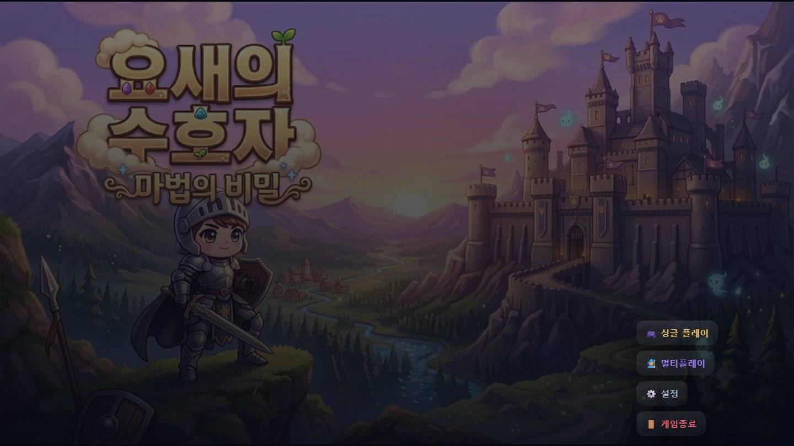
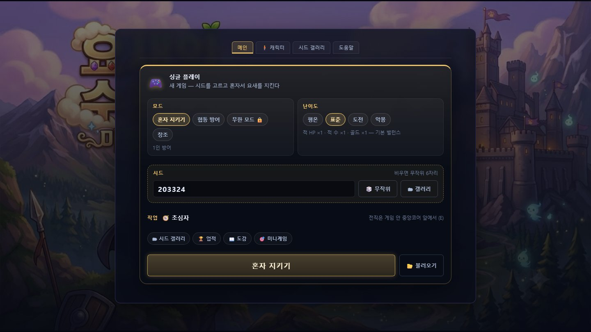

👹
몬스터 11종
뿔 · 턱 · 이빨 · 발톱 · 망토 · 날개까지 — 종류마다 다른 괴물 실루엣과 움직임.
웨이브를 막아내며 포탑을 세우고, 자원을 캐고, 마법을 연성하세요. 1인칭 슈터와 타워 디펜스가 맞물린 요새 방어전 — 친구와 최대 4인 협동도 가능합니다.

Download
내려받아 더블클릭 → [게임 다운로드 & 설치] 한 번이면 설치와 실행이 끝납니다. 최신 판이 이미 있으면 버튼이 사라지고 [게임 시작]만 남습니다.
| 파일 | 설명 |
|---|---|
| YoseGuardian-Launcher.exe | 권장 — 게임 다운로드 런처 (다운로드 · 설치 · 시작) |
| YoseGuardian-Setup.exe | 설치 프로그램 — 게임 내장, 인터넷 없이 설치 |
| YoseGuardian-Downloader.exe | 다운로더 앱 — 같은 설치 흐름 |
| game.zip | 게임 본체 — 서버·수동 설치용 |
설치 위치 %LOCALAPPDATA%\YoseGuardian\app · Windows 10/11 · Node.js 22 이상 필요 ·
인터넷이 없으면 런처 안에 든 게임으로 설치됩니다. 설치 파일을 직접 고르려면 창의 [설치 파일 선택] 을 누르세요.
Features
혼자서도, 친구와 함께서도 — 매번 다른 세계에서 요새를 지켜냅니다.
뿔 · 턱 · 이빨 · 발톱 · 망토 · 날개까지 — 종류마다 다른 괴물 실루엣과 움직임.
웨이브를 막으며 포탑 20종을 세우고, 제작대에서 만든 포탈로 지형을 넘나들며 보스 웨이브를 버텨냅니다.
7개 계열로 전직하고, 재료를 조합해 아르카나 스킬을 얻습니다. 쌍권총 건마스터의 유물 은하수의 밤까지.
초대코드로 최대 4인 협동. 연결이 끊겨도 45초 안에 돌아오면 그 자리에서 이어서 하고, 동료가 지은 건물도 바로 보입니다.
시드 기반 지형과 난이도 4단계 — 시드 갤러리에서 공유할 수 있습니다.
모으고 기록하는 수집 요소와 전투 밖의 작은 미니게임들.
Screens
설치 후 첫 웨이브 — 요새와 자원, 그리고 다가오는 몬스터.

Controls
마우스로 조준하고 쏘면서, 필요할 때 요새를 세우세요.